Course: Machine Learning Operations (AIMLCZG523) — Assignment 01
Project: Scalable, reproducible ML solution for heart disease risk prediction
Repository: https://github.com/2025ae05813-karan/mlops-assignment1
Cardiovascular disease is a leading cause of mortality, and early risk identification supports timely clinical intervention. This project builds a binary classifier that predicts the presence of heart disease from 13 routine patient measurements, and — more importantly for this course — wraps that model in a complete MLOps lifecycle: reproducible data processing, experiment tracking, automated testing, CI/CD, containerized serving, Kubernetes deployment, and monitoring.
The emphasis is on production readiness: every artifact is regenerated by code, the pipeline fails loudly on errors, and the model serves identically in an isolated container.
Prerequisites: Python 3.9+ (3.11 used in the container), optionally Docker Desktop (with Kubernetes) or Minikube for deployment.
python3 -m venv .venv && source .venv/bin/activate
pip install -r requirements.txt # or: conda env create -f environment.yml
Reproduce the full pipeline:
python scripts/download_data.py
python -m src.data_loader --sites cleveland
python -m src.eda
python -m src.train --mlflow
python -m src.mlflow_summary
Full details in README.md and REPRODUCIBILITY.md.
Source: UCI Machine Learning Repository, Heart Disease dataset (ID 45), Cleveland subset — 303 patients, 13 features + target.
Cleaning steps (src/data_loader.py):
- The raw files are header-less and use ? for missing values → converted to
NaN and all columns coerced to numeric.
- The original target num is a 0–4 severity score → binarized: 0 = no
disease, 1–4 = disease.
- Exact duplicate rows removed.
- Imputation/scaling are deliberately not done here; they live in the model
pipeline (fit on training folds) to prevent data leakage.
Resulting dataset: 303 rows, 6 missing cells (in ca, thal), class
balance 164 no-disease / 139 disease (~54% / 46%) — well balanced.
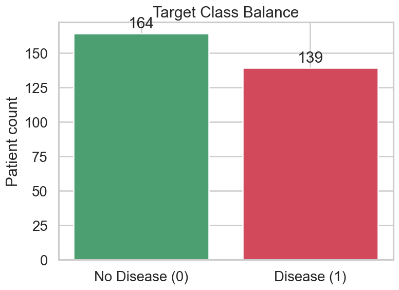
The near-even split means accuracy is a usable headline metric, but we still report precision, recall, and ROC-AUC because recall (catching true cases) is clinically most important.
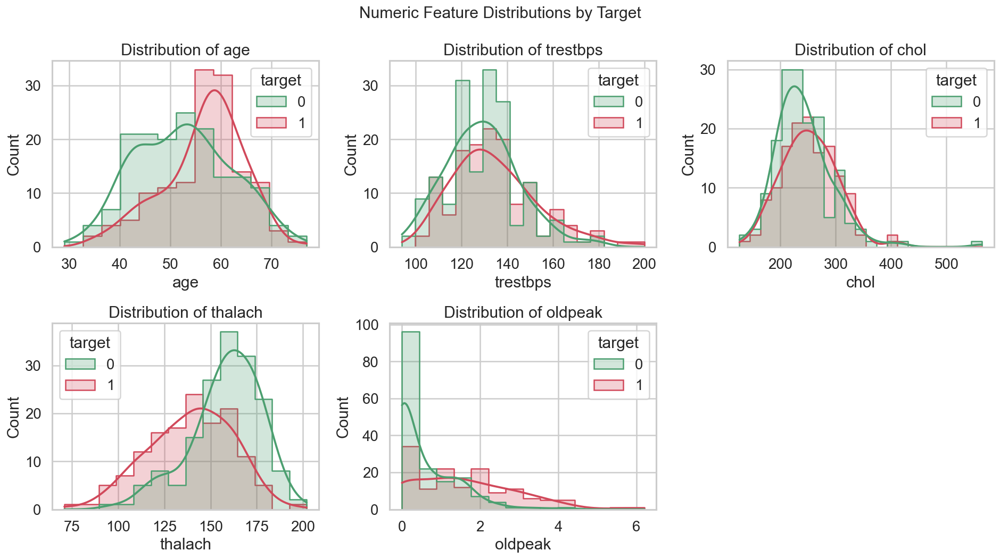
Diseased patients tend to show lower maximum heart rate (thalach) and higher
ST depression (oldpeak), consistent with clinical expectations.
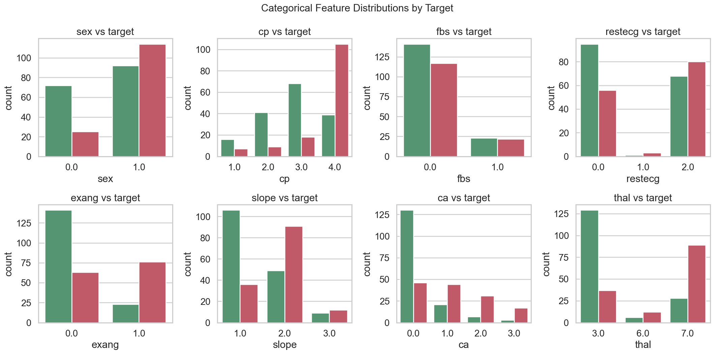
Chest-pain type (cp), exercise-induced angina (exang), number of major
vessels (ca), and thal separate the classes clearly.
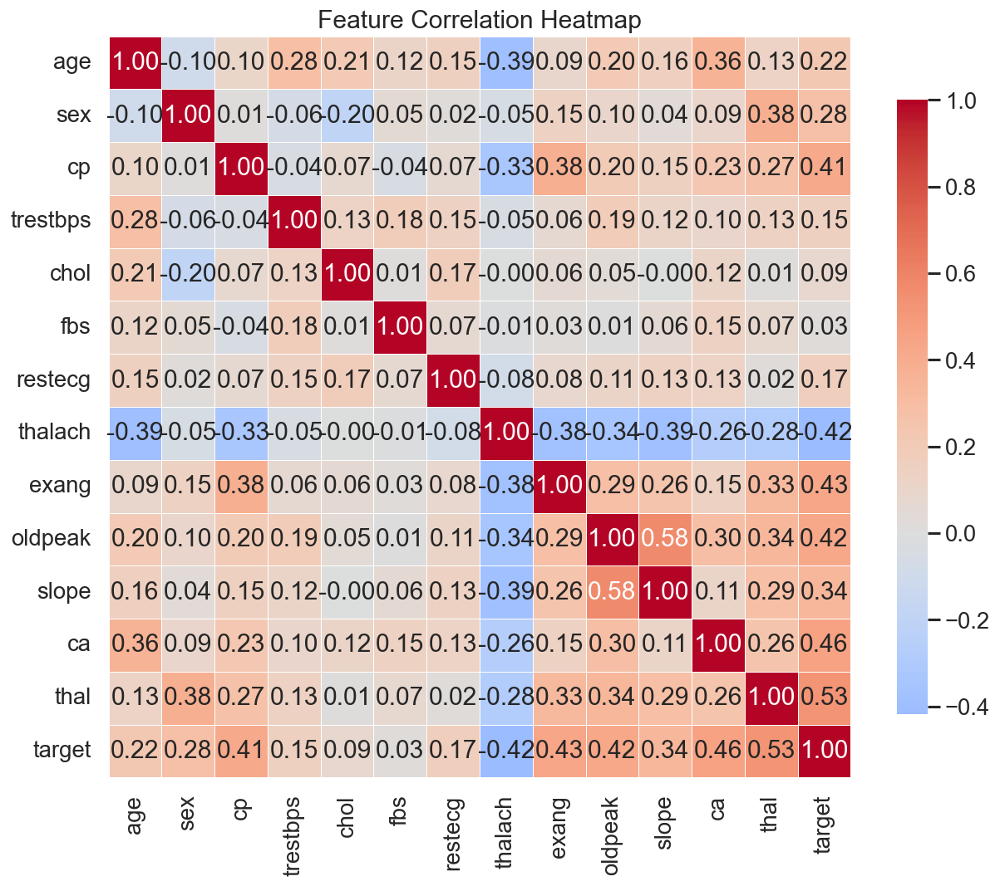
The strongest positive correlations with the target are thal (0.53),
ca (0.46), exang (0.43), and oldpeak (0.42); thalach is the strongest
negative (−0.42). No pair of predictors is collinear enough to require removal.
src/preprocess.py)A single scikit-learn Pipeline wraps a ColumnTransformer:
- Numeric (age, trestbps, chol, thalach, oldpeak): median imputation →
standard scaling.
- Categorical (sex, cp, fbs, restecg, exang, slope, ca, thal):
most-frequent imputation → one-hot encoding (handle_unknown="ignore").
Bundling transforms into the pipeline guarantees that training and serving apply identical logic and that statistics are learned only from training data.
src/train.py)Two classifiers were trained and tuned with GridSearchCV + 5-fold stratified
cross-validation, scoring on ROC-AUC:
| Model | Search space |
|---|---|
| Logistic Regression | C ∈ {0.01, 0.1, 1, 10}, solvers {lbfgs, liblinear} |
| Random Forest | n_estimators ∈ {200, 400}, max_depth ∈ {None, 5, 10}, min_samples_leaf ∈ {1, 2, 4} |
Data was split 80/20 (stratified, seed 42). Each tuned model was evaluated on the held-out 61-row test set.
| Model | CV ROC-AUC | Test Acc | Precision | Recall | F1 | Test ROC-AUC |
|---|---|---|---|---|---|---|
| Logistic Regression (selected) | 0.9025 | 0.8852 | 0.8387 | 0.9286 | 0.8814 | 0.9665 |
| Random Forest | 0.8996 | 0.8525 | 0.8065 | 0.8929 | 0.8475 | 0.9545 |
Selection: Logistic Regression was chosen on the highest cross-validated ROC-AUC. It also delivers the best recall (0.93) — the priority for a screening model — while remaining interpretable.
| Logistic Regression | Random Forest |
|---|---|
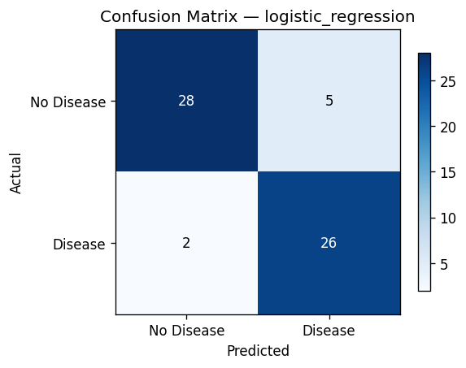 |
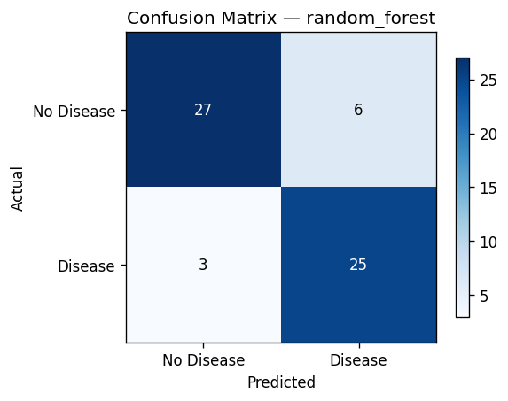 |
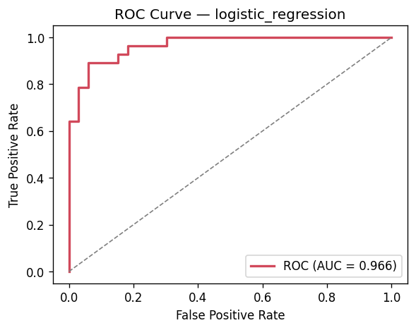 |
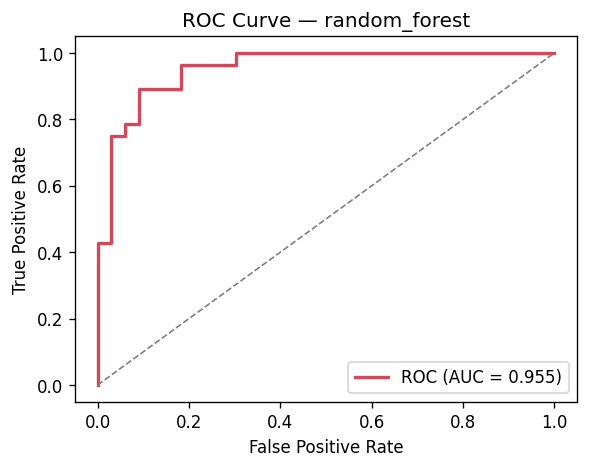 |
MLflow logs every run under the heart-disease-classification experiment. Each
run records hyperparameters, the six metrics above, and artifacts (confusion
matrix, ROC curve, and the serialized model). A text summary is exported to
report/experiment_tracking_summary.md.
View the UI with:
mlflow ui --backend-store-uri ./mlruns # http://127.0.0.1:5000
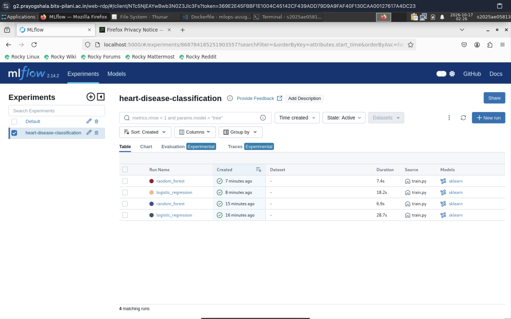
The heart-disease-classification experiment shows all tuned runs (Logistic
Regression and Random Forest), each logged from train.py with its parameters,
metrics, and the serialized sklearn model.
models/model.joblib — the full preprocessing + model pipeline,
serialized with joblib. models/model_metadata.json records the selected
model, tuned params, feature schema, seed, and all candidate metrics.requirements.txt (and environment.yml).requirements.txt, and the full pipeline re-run — it
reproduced the exact metrics and sample prediction. See REPRODUCIBILITY.md.Tests (tests/, 26 total):
- test_data.py (11) — raw loading, ?→NaN, target binarization, dedupe,
feature split, imputation, scaling, full-pipeline fit/predict.
- test_model.py (7) — ≥2 models present, valid grids, metric correctness,
estimator learning, predict_proba availability.
- test_api.py (8) — health, predict (prediction + confidence), input
validation (422), metrics endpoint.
Pipeline (.github/workflows/ci.yml): three gated jobs —
lint (ruff) → test (pytest + JUnit) → train (MLflow + artifact uploads).
The pipeline fails on any lint or test error (verified non-zero exit codes)
and uploads the test report, model, plots, and MLflow runs as artifacts.
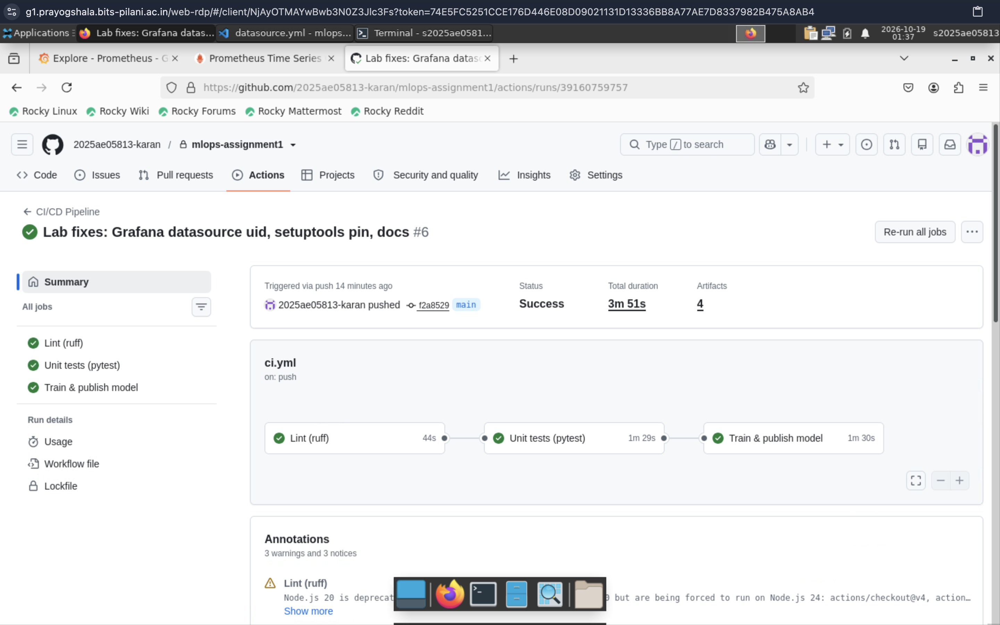
A successful run of the pipeline on main: all three jobs — Lint (ruff), Unit
tests (pytest), and Train & publish model — pass, producing four uploaded
artifacts.
Dockerfile builds a python:3.11-slim image that installs dependencies,
builds the dataset, trains the model at build time (fully self-contained),
runs as a non-root user, and defines a container HEALTHCHECK against
/health. The API serves via uvicorn on port 8000.
Build & test:
docker build -t heart-disease-api:latest .
bash scripts/docker_build_and_test.sh
Image build (16/16 layers, self-contained):
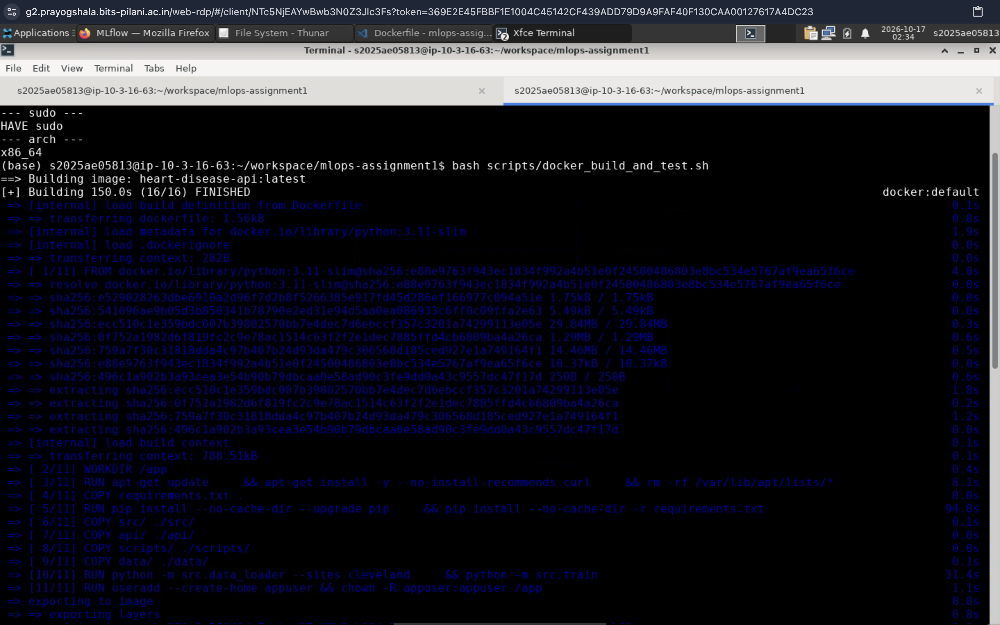
Container health and predictions — the helper script hits /health, then
posts a low-risk and a high-risk sample. The low-risk patient returns
no_disease (confidence 0.83) and the high-risk patient returns disease
(confidence 0.986):
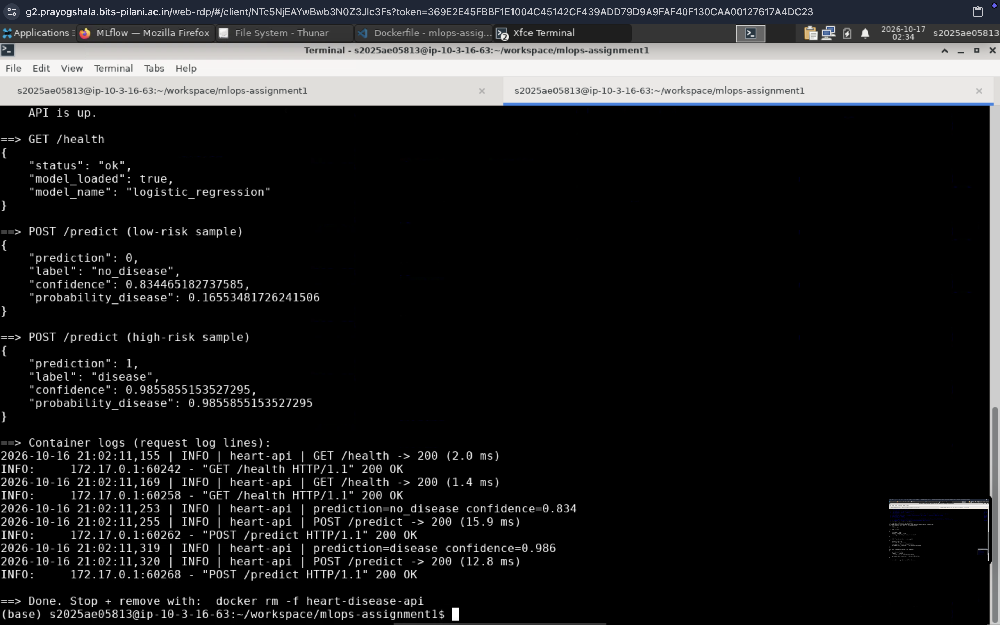
Request logs from inside the container (method, path, status, latency, plus prediction label and confidence):
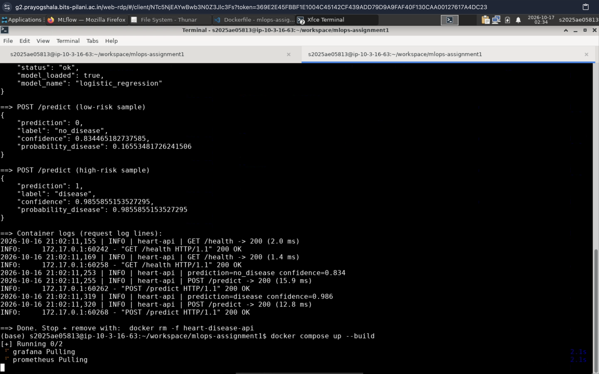
Deployed to local Kubernetes (Minikube or Docker Desktop) via manifests in
deploy/k8s/:
- Deployment — 2 replicas, readiness + liveness probes on /health,
CPU/memory requests & limits.
- Service — LoadBalancer (port 80 → 8000). An Ingress manifest is
provided as an alternative.
bash scripts/k8s_deploy_and_verify.sh
Cluster state — the Deployment reports 2/2 ready replicas, both pods are
Running, and the LoadBalancer Service exposes the API (port 80 → NodePort
32287):
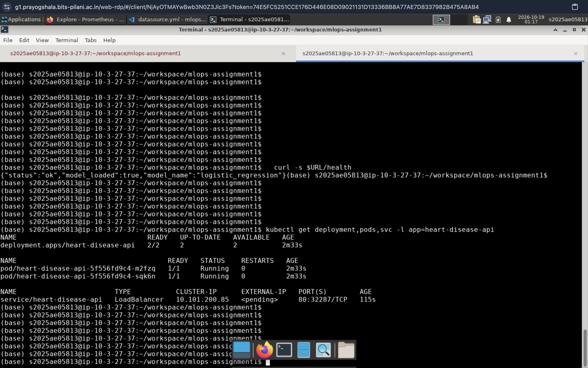
Endpoint verification against the cluster — curl $URL/health returns the
loaded model, and curl $URL/predict returns a disease prediction with 0.986
confidence:
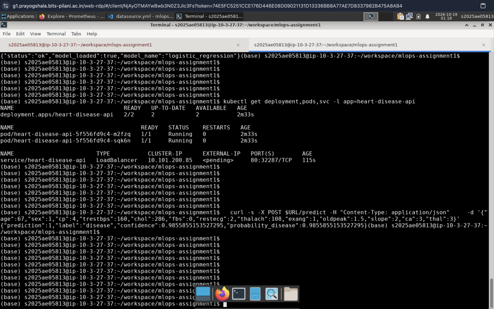
Deployment detail (kubectl describe) — RollingUpdate strategy, liveness &
readiness probes on /health, and CPU/memory requests and limits:
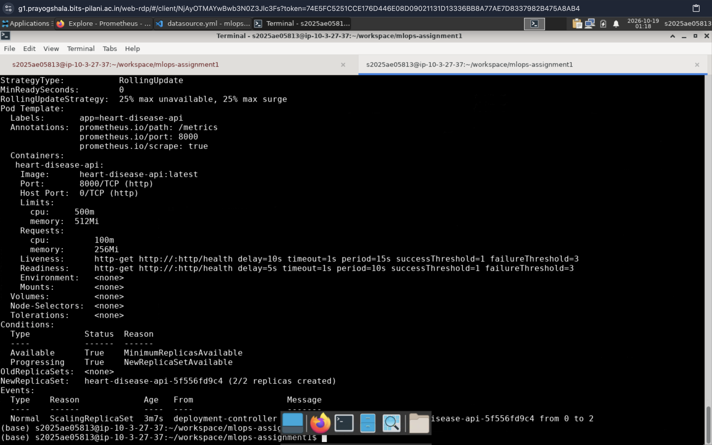
See deploy/k8s/README.md for the full flow.
/metrics.docker compose up --build runs API + Prometheus + Grafana.
Grafana auto-provisions the Prometheus datasource and a dashboard with
request rate, status codes, latency p50/p95, predict count, and average
duration.Prometheus targets — both the API and Prometheus itself are scraped and
UP:
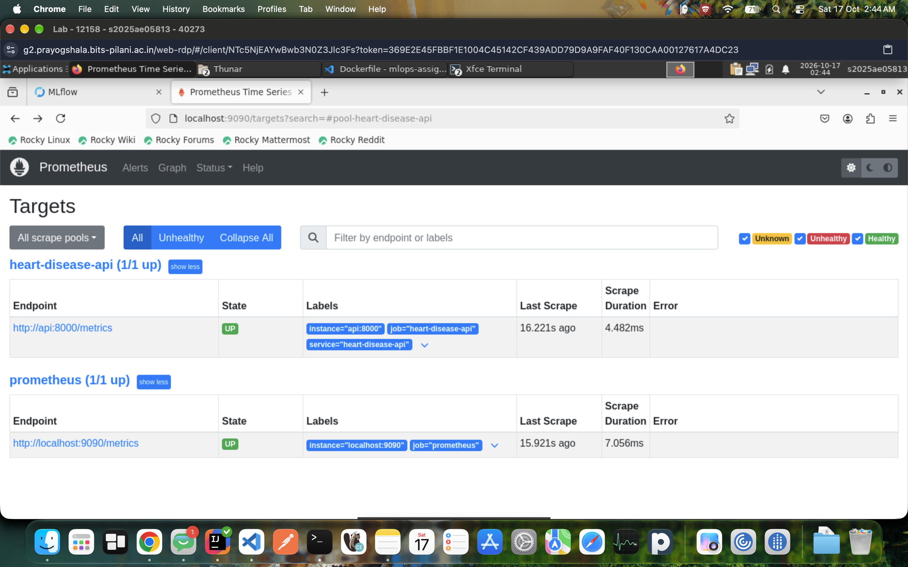
Prometheus query — http_requests_total broken down by handler after a
load-generation loop (/health, /metrics, and 100 /predict calls):
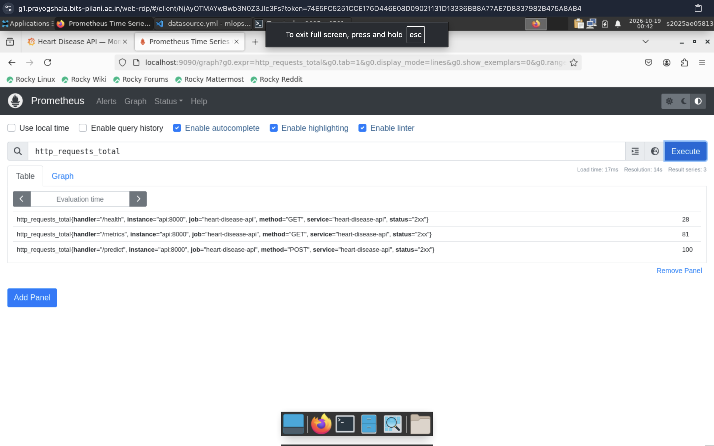
Grafana dashboard — request rate by handler, responses by status code,
latency p50/p95, total /predict requests, and average request duration, all
updating live:
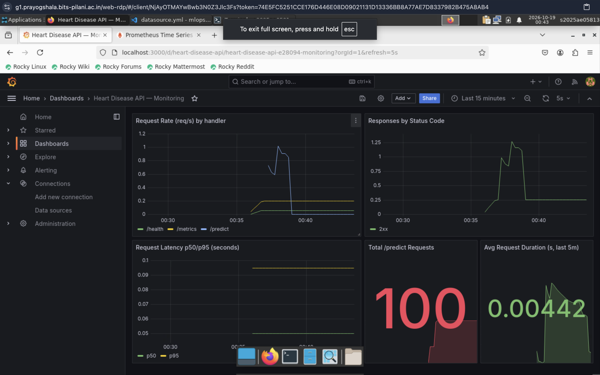
See deploy/monitoring/README.md.
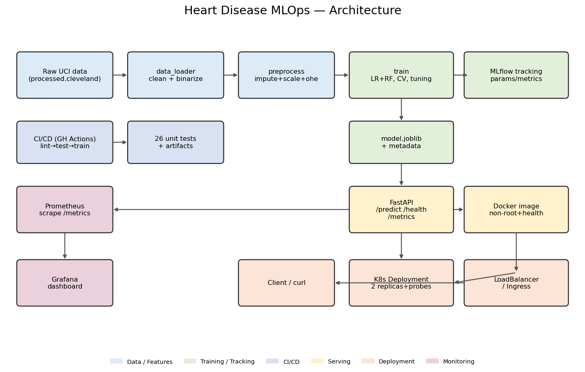
The same Docker image flows from CI through serving, deployment, and monitoring.
A detailed component breakdown and the Mermaid source are in
report/architecture.md.
| Assignment task | Status |
|---|---|
| 1. Data & EDA | Clean pipeline + 4 professional visualizations |
| 2. Modeling | LR + RF, CV + tuning, full metric suite |
| 3. Experiment tracking | MLflow runs with params/metrics/artifacts |
| 4. Packaging & reproducibility | Pipeline artifact, pinned deps, clean-env verified |
| 5. CI/CD & tests | 26 tests, 3-stage GitHub Actions, fail-on-error |
| 6. Containerization | Self-contained Dockerfile + /predict + confidence |
| 7. Deployment | K8s Deployment + LoadBalancer/Ingress |
| 8. Monitoring | Prometheus + Grafana + request logging |
| 9. Documentation | This report, README, architecture, guides |
Final model: Logistic Regression — Test ROC-AUC 0.966, Recall 0.93, Accuracy 0.885.
Conclusion. The project delivers a reproducible, testable, and observable ML service that mirrors a real production workflow. The modular design (clean separation of data, training, serving, and ops) means each piece is independently verifiable, and the local-first deployment keeps the entire stack reproducible at no cloud cost while remaining portable to a managed cluster.
Screenshots referenced above (MLflow UI, GitHub Actions, Docker, kubectl,
Prometheus/Grafana) are captured during the local run and stored in
report/screenshots/.